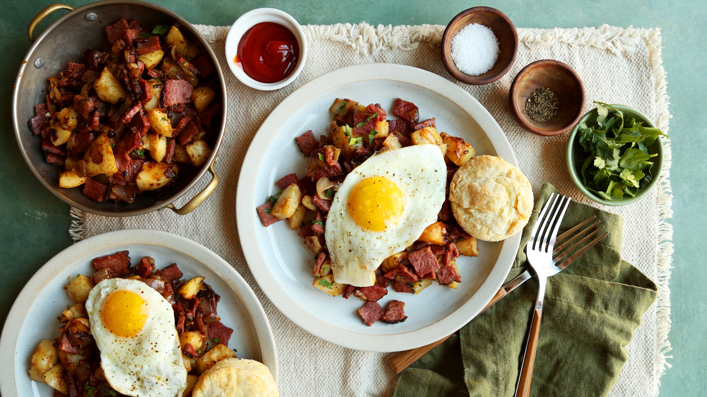

Irish Favorites for Saint Patrick's Day

From colcannon and corned beef to soda bread and shepherd's pie, you'll find all the best traditional Saint Patrick's Day recipes here.
All the Shepherd's Pie Recipe

These gluten-free waffles are light, fluffy, and perfect for a special breakfast. Serve them with fresh fruit and maple syrup for a delicious treat!
Leftover Corned Beef Recipe
From hash to breakfast pizza, these recipes for leftovers go beyond the simple sandwich.